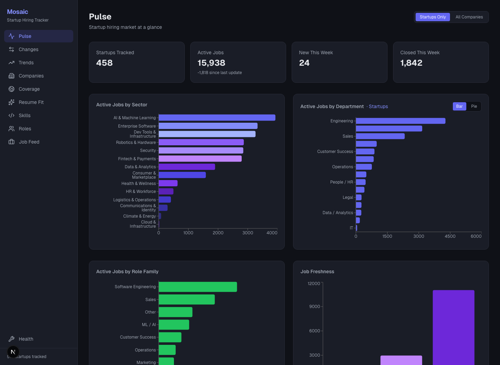
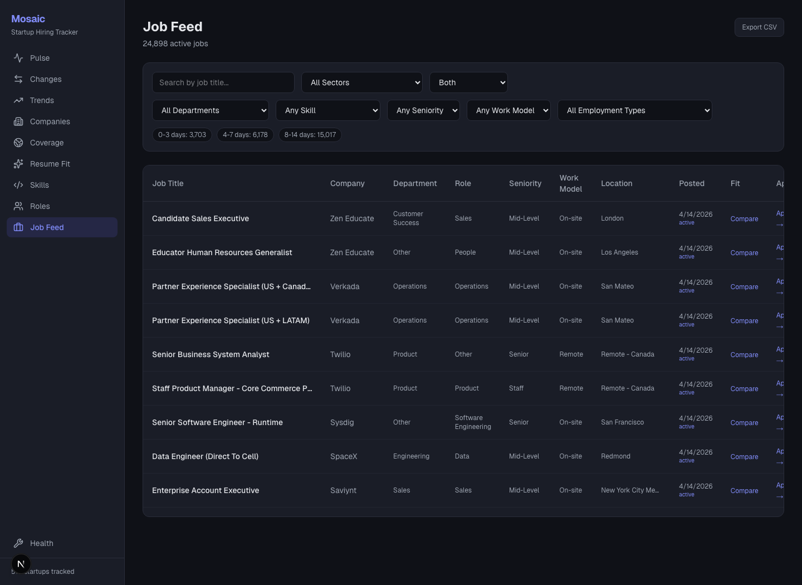
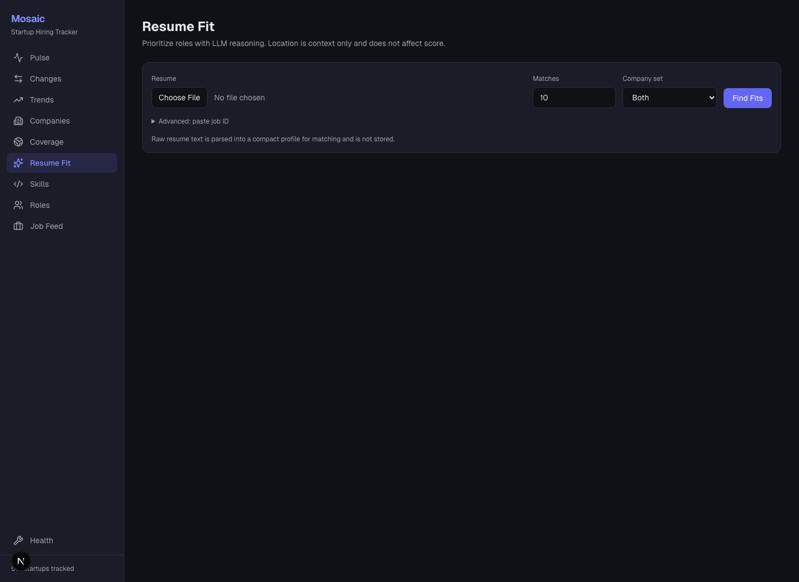
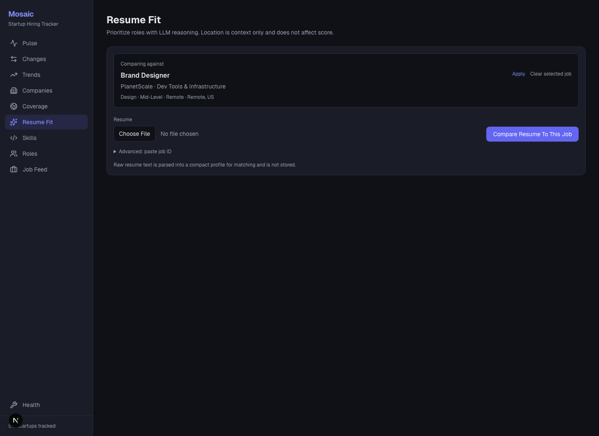
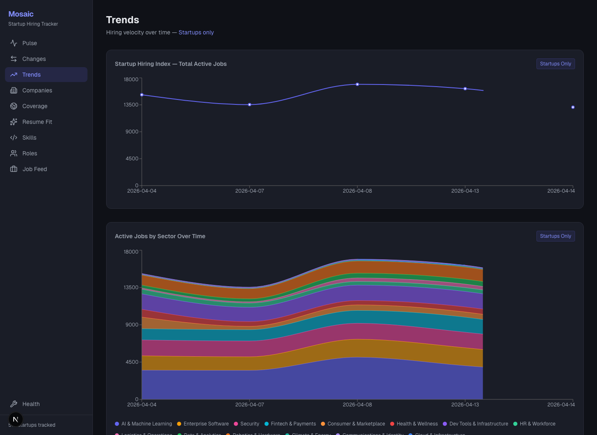
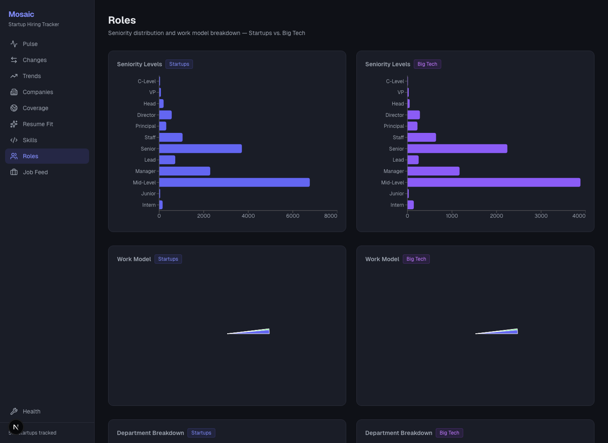
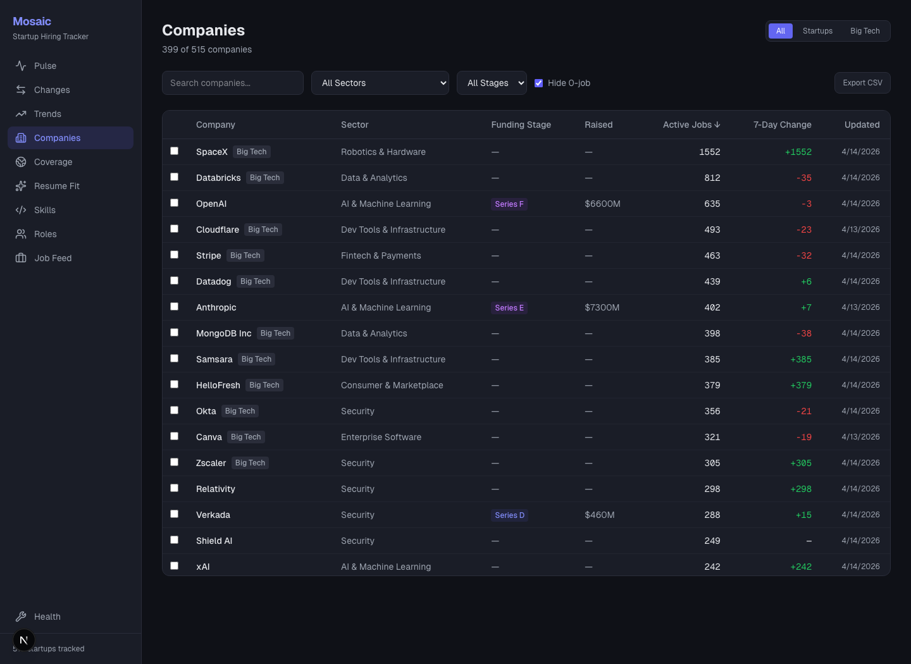
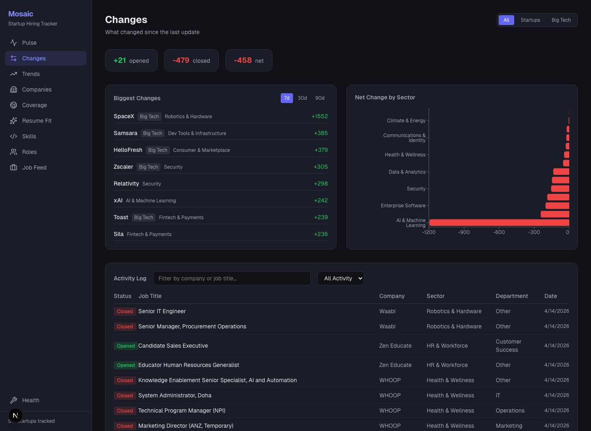

A picture-first guide to the data pipeline, API, dashboard, and Groq-backed resume fit flow.
async def run():
init_db()
companies = load_companies()
company_ids = {c["name"]: upsert_company(c) for c in companies}
semaphore = asyncio.Semaphore(SCRAPE_CONCURRENCY)
tasks = [
scrape_company_limited(semaphore, c, company_ids[c["name"]])
for c in companies
]
results = await asyncio.gather(*tasks, return_exceptions=True)
Scraping is I/O bound, so concurrency gives speed without complicating the database write path. Each run records found, added, removed, and failed counts, which powers health and change views.
Raw postings become dashboard-friendly fields after enrichment: normalized department, seniority, work model, role family, and skill tags.
CREATE TABLE IF NOT EXISTS resume_job_fits (
resume_id INTEGER NOT NULL,
job_id INTEGER NOT NULL,
deterministic_score REAL NOT NULL,
fit_score INTEGER NOT NULL,
rationale_json TEXT NOT NULL,
gaps_json TEXT NOT NULL,
suggestions_json TEXT NOT NULL,
prompt_version TEXT NOT NULL,
UNIQUE(resume_id, job_id, prompt_version)
);
Raw resume text is not stored. The DB stores a resume hash, a compact extracted profile JSON, and per-job fit outputs. That makes repeat comparisons cheaper while keeping the sensitive raw upload out of persistence.
@app.get("/api/jobs")
def jobs(search: Optional[str] = None,
company_type: Optional[str] = None,
seniority: Optional[str] = None):
return queries.get_active_jobs(
search=search,
company_type=company_type,
seniority=seniority,
)
@app.post("/api/fit/matches")
async def fit_matches(resume: UploadFile = File(...),
company_type: Optional[str] = Form(None),
limit: int = Form(20)):
content = await resume.read()
resume_text = extract_resume_text(resume.filename, content)
return analyze_resume_matches(
resume_text,
company_type=company_type or None,
limit=max(1, min(limit, 40)),
)
const API_BASE =
process.env.NEXT_PUBLIC_API_URL || "http://localhost:8000";
jobs: (filters?: JobFilters) =>
fetchApi<JobRow[]>("/api/jobs", filters)
fitMatches: (file, options) => {
const form = new FormData();
form.set("resume", file);
form.set("company_type", options.company_type);
return postFormApi("/api/fit/matches", form);
}
Declare client-side state for data and UI controls: overview rows, chart rows, selected scope, and chart mode.
Load data with `useEffect` whenever the scope changes. The page does not talk to SQL directly; it calls typed API helpers.
Render small reusable visual blocks, then feed arrays into Recharts for responsive charts.
export default function PulsePage() {
const [overview, setOverview] = useState(null);
const [scope, setScope] = useState<"startup" | "all">("startup");
useEffect(() => {
const ct = scope === "startup" ? "startup" : undefined;
api.overview(ct).then(setOverview);
api.departments(ct).then(setDepartments);
api.roleFamilies(ct).then(setRoleFamilies);
}, [scope]);
return <div className="space-y-8">...</div>;
}
function KpiCard({ label, value, sub }: {
label: string;
value: string | number;
sub?: string;
}) {
return (
<div className="bg-card border border-card-border rounded-xl p-5">
<p className="text-sm text-muted">{label}</p>
<p className="text-2xl font-bold mt-1">
{typeof value === "number" ? value.toLocaleString() : value}
</p>
{sub && <p className="text-xs text-muted mt-1">{sub}</p>}
</div>
);
}
The visual design is mostly composition: a typed function, a few props, and utility classes. Once the component exists, the page can render a consistent row of metrics without repeating markup.
The API returns plain rows like `{ sector: "AI", job_count: 1420 }`.
`ResponsiveContainer` lets the chart fill the card width without hand-computing pixels.
`Cell` maps each bar to a color from the palette, so the data array drives the visual.
<ResponsiveContainer width="100%" height={360}>
<BarChart data={sectors} layout="vertical" margin={{ left: 20 }}>
<XAxis type="number" tick={{ fill: "#9ca3af", fontSize: 12 }} />
<YAxis type="category" dataKey="sector" width={160} />
<Tooltip {...TOOLTIP_STYLE} />
<Bar dataKey="job_count" radius={[0, 4, 4, 0]}>
{sectors.map((_, i) => (
<Cell key={i} fill={COLORS[i % COLORS.length]} />
))}
</Bar>
</BarChart>
</ResponsiveContainer>
The chart container uses the same card shell, border, radius, text color, and tooltip style as the rest of the app. Recharts handles SVG drawing; the app owns layout, labels, and data shaping.
<input
type="text"
placeholder="Search by job title..."
value={search}
onChange={(e) => setSearch(e.target.value)}
className="bg-background border border-card-border rounded-lg px-3 py-2"
/>
const filters = useMemo(() => ({
search: search || undefined,
skill: skill || undefined,
company_type: companyType || undefined,
}), [search, skill, companyType]);
useEffect(() => {
let cancelled = false;
api.jobs(filters).then((data) => {
if (!cancelled) setJobs(data);
});
return () => { cancelled = true; };
}, [filters]);
The table keeps a sticky header and scrollable body so thousands of jobs stay navigable.
Cell values are formatted before display: role families, seniority, work model, dates, and location fallbacks.
The `Compare` link encodes the job id in the URL so `/fit` can load selected job context.
{jobs.slice(0, 500).map((j) => (
<tr key={j.id} className="border-b border-card-border/50">
<td className="font-medium max-w-xs truncate">{j.title}</td>
<td className="text-muted">{j.company_name}</td>
<td className="text-xs">{formatWorkModel(j.work_model)}</td>
<td>
<Link href={`/fit?jobId=${j.id}`}>Compare</Link>
</td>
</tr>
))}
A URL like `/fit?jobId=123` is shareable, reloadable, and works from any screen. The `/fit` page reads that query param and fetches the selected job preview.
const selectedJobId = params.get("jobId") || "";
useEffect(() => {
setJobId(selectedJobId);
setSelectedJob(null);
if (!selectedJobId) return;
api.jobDetail(Number(selectedJobId))
.then(setSelectedJob)
.catch(() => setJobError("Selected job was not found."));
}, [selectedJobId]);
{!jobId.trim() && (
<>
<input type="number" value={limit} />
<select value={companyType}>
<option value="">Both</option>
<option value="startup">Startups</option>
<option value="bigco">Big companies</option>
</select>
</>
)}
function scoreColor(score: number) {
if (score >= 80) return "text-green";
if (score >= 65) return "text-accent-light";
if (score >= 50) return "text-yellow-400";
return "text-red";
}
<ReasonBlock title="Why" rows={match.why} />
<ReasonBlock title="Gaps" rows={match.gaps} />
<ReasonBlock title="Pointers" rows={match.resume_pointers} />
{match.matched_skills.map((skill) => (
<span key={skill} className="rounded-full bg-green/10">
{skill}
</span>
))}
The LLM does not return HTML. It returns arrays and fields. React decides how to present those fields consistently as score, chips, sections, and links.
async function fetchApi<T>(
path: string,
params?: Record<string, string | number | undefined>
): Promise<T> {
const url = new URL(`${API_BASE}${path}`);
Object.entries(params ?? {}).forEach(([k, v]) => {
if (v !== undefined && v !== "") url.searchParams.set(k, String(v));
});
const res = await fetch(url.toString());
if (!res.ok) throw new Error(`API error: ${res.status}`);
return res.json();
}
fitMatches: (file, options) => {
const form = new FormData();
form.set("resume", file);
if (options?.company_type) form.set("company_type", options.company_type);
if (options?.limit) form.set("limit", String(options.limit));
return postFormApi<FitMatchesResponse>("/api/fit/matches", form);
}
const filters = useMemo((): JobFilters => ({
search: search || undefined,
sector: sector || undefined,
skill: skill || undefined,
seniority: seniority || undefined,
work_model: workModel || undefined,
company_type: companyType || undefined,
department: department || undefined,
}), [search, sector, skill, seniority, workModel, companyType]);
where = "jp.is_active = 1"
if company_type:
sql += " AND c.company_type = ?"
params.append(company_type)
if search:
sql += " AND (jp.title LIKE ? OR jp.department LIKE ?)"
The job feed and resume-fit search both expose the same choices: Both, Startups, and Big companies. For resume fit, that scope constrains the shortlist before LLM calls happen.
score = 0.0 score += min(len(overlap) * 8.0, 40.0) score += 25.0 if role_family matches else 0.0 score += 15.0 if seniority is compatible else 0.0 score += title_similarity * 12.0 score += 5.0 if sector matches resume domains else 0.0 score += freshness_score(first_seen_at)
body = {
"model": _model(),
"messages": messages,
"temperature": 0.1,
"response_format": {"type": "json_object"},
}
# Frontend NEXT_PUBLIC_API_URL=https://your-railway-api # Backend TRACKER_DB_PATH=data/tracker-demo.db FRONTEND_URL=https://your-vercel-app GROQ_API_KEY=... LLM_MODEL=...
uvicorn api.app:app --reload --port 8000 cd dashboard npm run dev
Add a field in SQLite, expose it in `db/queries.py`, return it from a FastAPI route, type it in `dashboard/src/lib/api.ts`, then render it in a page component. For AI features, keep the raw resume out of storage and cache only structured profiles and fit decisions.
The next pages connect screenshots to the files and functions that create them. Treat it like a guided build: start with layout and theme, add the typed API client, create backend routes, build each screen, then wire resume matching and deployment.
Every visual feature follows the same loop: UI state picks a question, API sends the question to FastAPI, SQL returns rows, and React maps rows into cards, charts, tables, or AI result blocks.

Scope buttons change whether the dashboard asks for startup-only or all-company data.
KPI cards display totals from `/api/overview`.
Sector, department, role family, and freshness charts render rows from API helpers.
dashboard/src/app/page.tsx`PulsePage`, `KpiCard`, chart JSX, scope state
dashboard/src/lib/api.ts`api.overview`, `api.departments`, `api.roleFamilies`, `api.jobFreshness`
api/app.py`overview`, `departments`, `role_families`, `job_freshness`
db/queries.py`get_overview_stats`, `get_department_breakdown`, `get_role_family_breakdown`, `get_freshness_breakdown`
The dashboard uses a stable grid: `grid-cols-2 md:grid-cols-4` for cards and `md:grid-cols-2` for charts. Data changes the numbers and bar lengths, but the layout stays predictable.

Filter controls are controlled inputs: each one stores its current value in React state.
`useMemo` builds a clean `JobFilters` object, skipping empty fields.
The table maps `JobRow[]` into visible rows, links company names to detail pages, and routes `Compare` to Resume Fit.
const [search, setSearch] = useState("");
const [companyType, setCompanyType] = useState("");
const filters = useMemo(() => ({
search: search || undefined,
company_type: companyType || undefined,
}), [search, companyType]);
useEffect(() => {
api.jobs(filters).then(setJobs);
}, [filters]);

No `jobId` in the URL. The form shows match count and company set because the user is asking the app to search broadly.

With `/fit?jobId=2222`, the page fetches one job and shows the selected-job card above upload controls.
FitInnerowns file, limit, companyType, jobId, selectedJob, loading, error, result state
SelectedJobCardrenders selected job title, company, sector, role, Apply link, clear button
FitCardrenders score, verdict, skills, why, gaps, pointers
ReasonBlockrenders each explanation section from LLM arrays
const selectedJobId = params.get("jobId") || "";
if (trimmedJobId) {
const data = await api.fitJob(Number(trimmedJobId), file);
setResult(data);
} else {
const data = await api.fitMatches(file, {
company_type: companyType || undefined,
limit,
});
setResult(data);
}


`dashboard/src/app/trends/page.tsx` shapes job count rows into a time series and passes them into `LineChart`.
Cross-tab rows become multi-series bars by transforming `{ sector, department, job_count }` into one row per sector.
Roles and company detail pages use `PieChart`, `Pie`, `Cell`, and shared color arrays for category breakdowns.


Loads `api.companies()`, then filters/sorts client-side for a management view of tracked companies.
Combines event logs, mover rows, and sector deltas so the user can see what changed between scrapes.
Uses scrape run status to show broken, stale, or healthy company sources.
layout.tsxWraps every page with fonts, sidebar, and scrollable main content.
globals.cssDefines design tokens: background, card, borders, accent, green, red, muted.
components/Sidebar.tsxNavigation list, active link styling, mobile drawer, company count.
lib/api.tsTyped API functions and upload helpers.
lib/format.tsHuman-readable labels for seniority, work model, role family.
app/page.tsxPulse dashboard cards and charts.
app/jobs/page.tsxJob feed filters, export, table, compare link.
app/fit/page.tsxResume upload, selected job mode, fit cards.
tracker.pyBatch orchestrator: load companies, scrape, sync, enrich, extract skills.
scraper/*.pyATS-specific job fetchers returning normalized `JobPosting` objects.
scraper/enrichment.pyInfers seniority, work model, department, role family, location fields.
analysis/nlp.pyExtracts skill tags from job descriptions.
analysis/resume_fit.pyResume parsing, shortlist scoring, Groq prompts, fit normalization.
db/models.pySQLite connection, schema creation, migrations.
db/queries.pyAll SQL reads/writes used by scrapers, API, dashboard, and fit matching.
api/app.pyFastAPI route layer and error sanitization.
:root {
--background: #0f1117;
--foreground: #e5e7eb;
--card: #1a1d27;
--card-border: #2a2d3a;
--accent: #6366f1;
--accent-light: #818cf8;
--green: #22c55e;
--red: #ef4444;
--muted: #9ca3af;
}
<body className="h-full flex">
<Sidebar />
<main className="flex-1 overflow-y-auto p-4 pt-16 md:p-8">
{children}
</main>
</body>
const NAV = [
{ href: "/", label: "Pulse", icon: Activity },
{ href: "/changes", label: "Changes", icon: ArrowLeftRight },
{ href: "/trends", label: "Trends", icon: TrendingUp },
{ href: "/companies", label: "Companies", icon: Building2 },
{ href: "/fit", label: "Resume Fit", icon: Sparkles },
{ href: "/jobs", label: "Job Feed", icon: Briefcase },
];
const active = pathname === href;
className={active
? "bg-accent/15 text-accent-light font-medium"
: "text-muted hover:text-foreground hover:bg-white/5"
}
This is why every screenshot has the same frame: dark body, fixed sidebar, active nav color, and scrollable page content.
get_company_statsCompanies table and coverage views.
get_active_jobsJob Feed filters and company detail listings.
get_active_jobSelected job card on Resume Fit.
get_jobs_for_fit_poolCandidate pool before deterministic scoring and Groq.
get_overview_statsPulse KPI cards.
get_recent_eventsChanges event feed.
get_fastest_moversCompanies with the largest add/remove movement.
get_dept_sector_crossTrend cross-tab charts.
def get_active_jobs(company_type=None, search=None, skill=None):
sql = """
SELECT jp.*, c.name AS company_name, c.sector
FROM job_postings jp
JOIN companies c ON c.id = jp.company_id
WHERE jp.is_active = 1
"""
params = []
if company_type:
sql += " AND c.company_type = ?"
params.append(company_type)
return [dict(r) for r in conn.execute(sql, params).fetchall()]
/api/overview`overview` -> `get_overview_stats`
/api/companies`companies` -> `get_company_stats`
/api/companies/{id}`company_detail` -> detail, skills, departments
/api/jobs`jobs` -> `get_active_jobs` with filters
/api/jobs/{job_id}`job_detail` -> selected fit preview
/api/changes/events`change_events` -> event feed
/api/fit/matches`fit_matches` -> upload resume and search many jobs
/api/fit/jobs/{job_id}`fit_job` -> upload resume and compare one job
@app.get("/api/jobs")
def jobs(company_type: Optional[str] = None,
search: Optional[str] = None,
skill: Optional[str] = None):
return queries.get_active_jobs(
company_type=company_type,
search=search,
skill=skill,
)
The backend catches low-level Groq/config failures and returns product-safe messages. That keeps deployment details out of the user interface.
Without `api.ts`, every page would hand-roll URLs, form uploads, error parsing, and response types. A single API client turns backend routes into reusable frontend functions.
Define TypeScript interfaces matching backend response shapes.
Write `fetchApi<T>` for GET routes with optional query params.
Write `postFormApi<T>` for file uploads and parsed backend errors.
Export named API functions like `jobs`, `companyDetail`, `fitMatches`, and `fitJob`.
export interface JobRow {
id: number;
company_id: number;
title: string;
company_name: string;
sector: string;
seniority: string | null;
work_model: string | null;
role_family: string | null;
url: string | null;
}
jobs: (filters?: JobFilters) =>
fetchApi<JobRow[]>("/api/jobs", filters)
jobDetail: (id: number) =>
fetchApi<JobRow>(`/api/jobs/${id}`)
export default function SomePage() {
const [rows, setRows] = useState<RowType[]>([]);
const [filter, setFilter] = useState("");
useEffect(() => {
api.someEndpoint(filter || undefined).then(setRows);
}, [filter]);
const visibleRows = useMemo(() => {
return rows.slice(0, 500);
}, [rows]);
return (
<div className="space-y-6">
<Header />
<Controls value={filter} onChange={setFilter} />
<Visual rows={visibleRows} />
</div>
);
}
extract_resume_textAccept `.txt`, `.md`, `.pdf`, `.docx`; convert bytes to text.
parse_resume_profileAsk Groq for strict JSON: roles, skills, seniority, domains, remote preference.
_candidate_filtersConvert profile into DB filter terms.
shortlist_jobsScore DB rows deterministically before LLM evaluation.
_request_fit_batchAsk Groq for fit score, verdict, why, gaps, pointers.
_normalize_fitGuarantee the UI receives safe fields even if LLM output is incomplete.
save_resume_fitCache result by resume id, job id, prompt version.
FitInnerOwns mode, form, submit, results, query param sync.
handleSubmitChooses `/api/fit/matches` or `/api/fit/jobs/{id}`.
SelectedJobCardMakes URL-selected jobs obvious to the user.
ProfileRowDisplays parsed resume profile facts.
FitCardDisplays per-job score, matched skills, explanation blocks.
ReasonBlockReusable list renderer for why, gaps, and pointers.
Do not store raw resume text. Keep `GROQ_API_KEY` only on the backend. Use low temperature and JSON response format. Cache structured profile and fit results, not the uploaded file.
async def parse(company_name: str, ats_identifier: str) -> list[JobPosting]:
# Fetch provider-specific jobs
# Normalize each result into JobPosting
# Return title, department, location, url, external_id, description
return jobs
Every ATS adapter hides provider-specific API or HTML details behind the same `parse` shape.
companies = load_companies()
for c in companies:
cid = queries.upsert_company(c)
results = await asyncio.gather(*[
scrape_company_limited(semaphore, c, company_ids[c["name"]])
for c in companies
])
enrich_all()
extract_all_skills()
New jobs become active rows. Missing jobs are marked inactive and produce removal events.
Titles and locations become normalized fields used by filters and charts.
Descriptions become `job_skills`, powering skill filters and deterministic resume matching.
Create `Sidebar`, `RootLayout`, and design tokens. You should be able to click between empty pages before adding any data.
Create `fetchApi`, `postFormApi`, and TypeScript interfaces. Replace raw fetch calls with `api.overview()`, `api.jobs()`, and friends.
Build `KpiCard`, shared tooltip style, chart card shells, and formatters for enums.
Use controlled inputs, `useMemo` filter objects, and `useEffect` fetches. Render tables from arrays.
Use query helpers to return rows already shaped for charts, then pass arrays to Recharts.
Start with file upload and selected job preview, then add backend parsing, shortlist scoring, Groq evaluation, and result cards.
A beginner can recreate this app when they can explain each screen as: state variables, API call, returned data type, visual component, and user action that updates state or navigates.
`Sidebar`, `KpiCard`, `PulsePage`, `JobFeedPage`, `FitPage`, `FitInner`, `SelectedJobCard`, `ProfileRow`, `FitCard`, `ReasonBlock`, `statusBadge`, `getStatusKey`, `CompanyCard`, `CompanyListTable`, `sortSeniority`, `mapWorkModelLabels`, plus API methods in `api.ts`.
`overview`, `companies`, `company_velocity`, `company_detail`, `sectors`, `departments`, `seniority`, `work_models`, `role_families`, `job_freshness`, `skills`, `jobs`, `job_filters`, `job_trends`, `job_detail`, `change_events`, `fastest_movers`, `sector_delta`, `scraper_health`, `_fit_error`, `fit_matches`, `fit_job`.
`extract_resume_text`, `analyze_resume_matches`, `analyze_single_job`, `parse_resume_profile`, `shortlist_jobs`, `_candidate_filters`, `_evaluate_jobs`, `_request_fit_batch`, `_score_job`, `_chat_json`, `_normalize_fit`, `_merge_fit`, `init_db`, `get_connection`, `sync_jobs`, `get_active_jobs`, `get_jobs_for_fit_pool`, `save_resume_fit`.
Pick one visible thing in a screenshot, find the component that renders it, find the API helper it calls, find the FastAPI route with the same path, then find the query function it calls. That trace is the app.